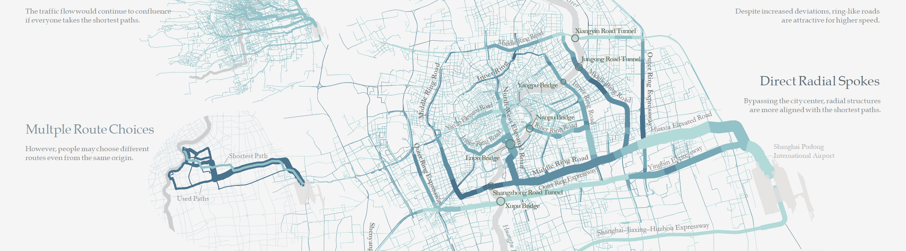
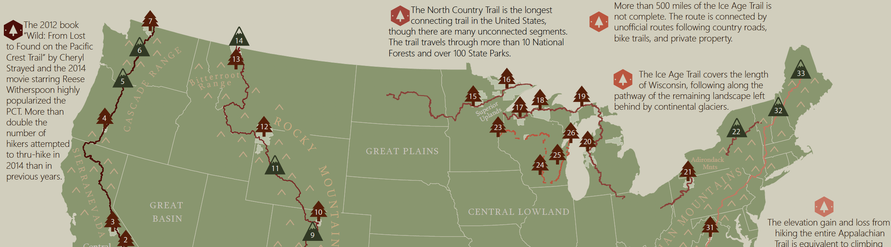
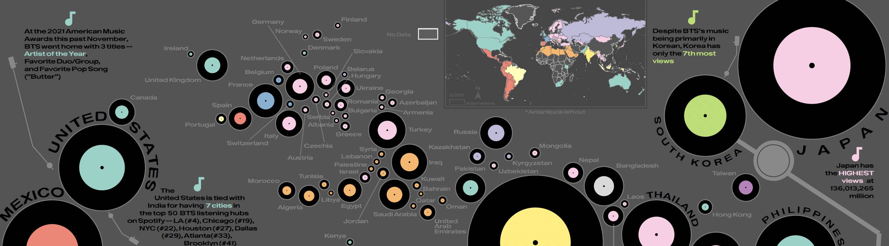
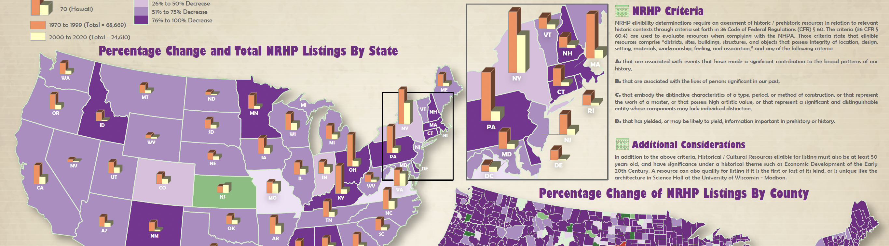

Education Final Projects





This course provides a general introduction to cartography, broadly defined as the art, science, and ethics of mapmaking and map use. It – and the UW Cartography curriculum in general – focuses upon the design of maps, drawing from research and practice on graphic design, information visualization, and semiotics, perspectives that students are unlikely to receive in other GIS courses. Specifically, the course emphasizes mapmaking over map use (compared to 170) and print mapping over web-based or interactive mapping (compared to 572 and 575, respectively). The course is divided into two components: lectures and labs.
Check out past syllabi and finals projects below!
Instructor: Robert E. Roth
TA: Alicia Iverson
Curriculum Overview
G370: Introduction to Cart
G572: Graphic Design
G575: Interactive Cart
G970: Cartography Seminar
Web Mapping Workbook
Mapping for a Sustainable World Textbook
QGIS Open Source Tutorials
Design Challenge
Cart Lab Education Series (CLES)
Educational Resources
Github Projects
Contact Us